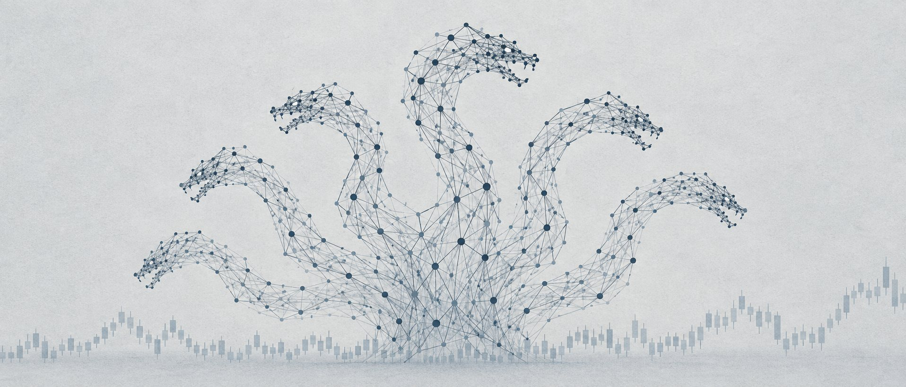
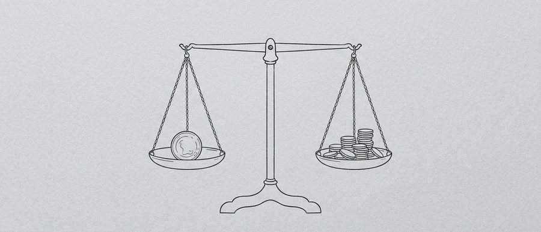
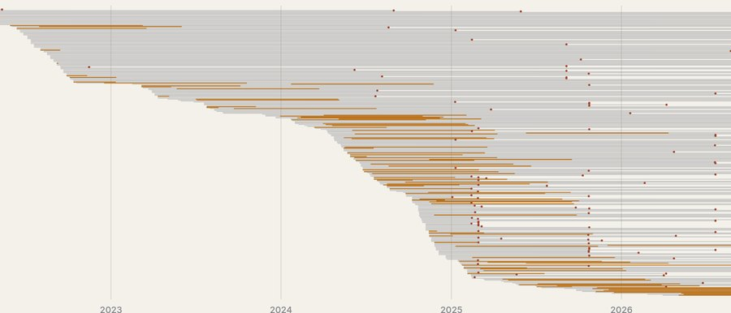
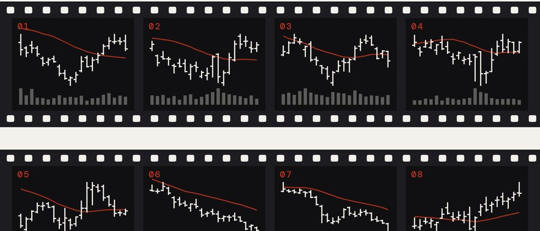

A research line of Ciya Labs · systematic trading
HydraTrade
Machine learning on markets, with the failures on record.
HydraTrade studies systematic trading in cryptocurrency and US equities. Every test is written down before it runs, each universe is rebuilt as it was known at the time, and the changes that fail are published beside the ones that hold. The reports below form one series: each starts from what the one before it established.
- Markets
- Cryptocurrency perpetuals, US equities
- Approach
- Cross-sectional ranking, market neutral
- Status
- The crypto book is in paper trading

Reports
-

Ranking Cryptocurrencies Instead of Predicting Them Why predicting the direction of the largest coins fails, and how a market-neutral ranking of a point-in-time universe survives four years of out-of-sample testing. Direction prediction stays at an AUC of 0.50 to 0.55. Ranking the universe instead returns a Sharpe ratio of 1.35 over 4.4 years of walk-forward history. Read report I - The Universe Was the Result Locating a failed equity strategy by elimination: universe, breadth, holding period, leg construction and fundamentals, one at a time. A Sharpe ratio of 1.78 falls to 0.06 once index membership is taken as it was known on each decision date. The edge was survivorship. Read report II
-

Letting the Young Coins In Twenty-one registered attempts to raise the profit of a live book, measured against a corrected baseline, and the one that held. Admitting a coin after sixty days of history instead of a year raises the Sharpe ratio from 1.29 to 1.74. Twenty other changes fail. Read report III -

Most of the Picture Was Already There Image-scaled price windows, the representation behind chart-reading networks, tested beside the rankers HydraTrade already runs. The image columns help a little in US stocks at a five-day hold and nowhere else. A network that sees only the chart ranks worse than the trees. Read report IV
Method
Four rules every report follows, so a result can be checked rather than trusted.
- Registered firstEvery change, its parameters and the test it must pass are fixed in writing before the first run. A rule that is loosened later is reported as such.
- Point-in-time universesCoins and companies enter and leave the universe on the dates they actually did, delisted names included. Report II shows what happens otherwise.
- Walk-forward with an embargoModels learn only from the past and are tested on the window that follows, with a gap between the two so that labels cannot leak.
- Failures on recordA change that fails is written up in the same detail as one that holds. Most of what the series has tested failed, and that is part of the result.